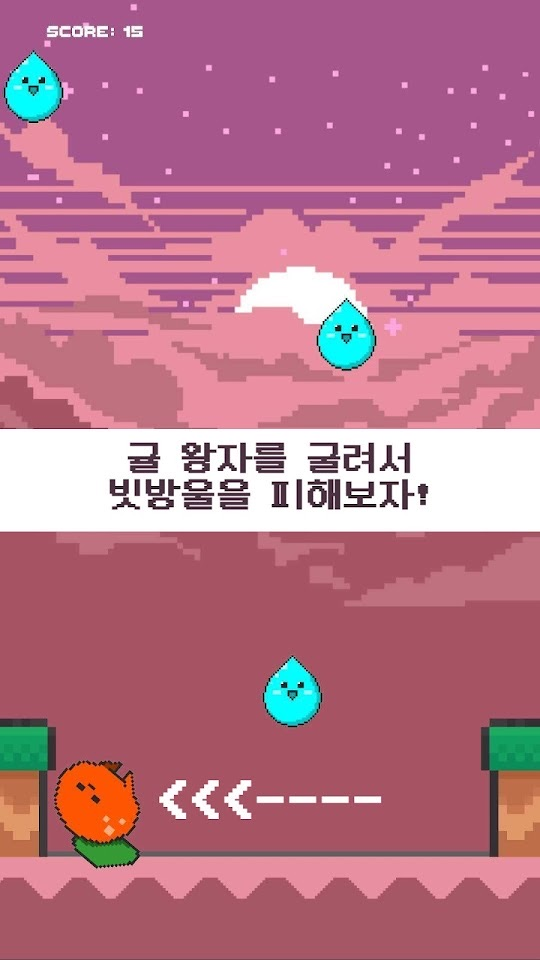
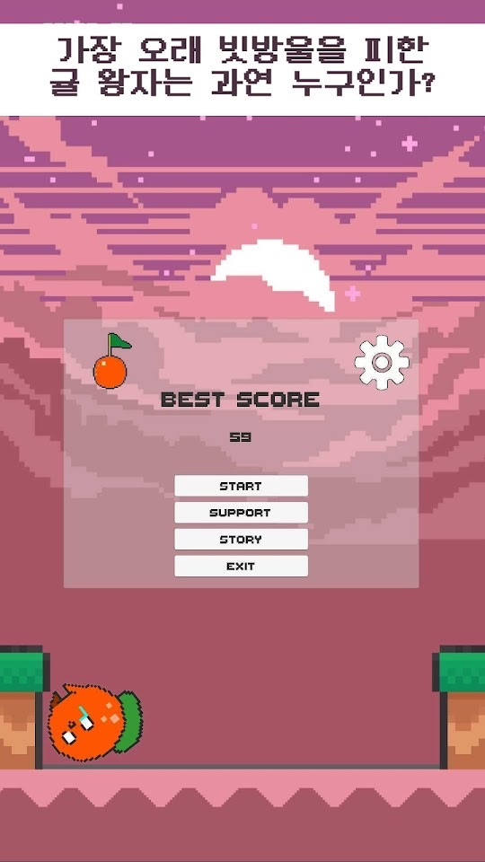
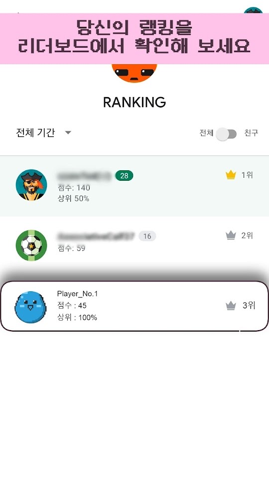

나뭇가지에서 떨어진 귤 왕자를 좌우로 굴려 쏟아지는 빗방울을 피하게 하는 캐주얼 게임입니다. 시간이 지날수록 비가 거세지고, 피한 기록으로 리더보드 순위를 겨룹니다.
게임의 기본 흐름
- 메뉴에서 START를 누르면 귤 왕자가 바닥에 서고 위에서 빗방울이 떨어집니다.
- 빗방울에 맞지 않도록 귤 왕자를 좌우로 움직입니다. 화면 왼쪽 위의 SCORE가 올라갑니다.
- 시간이 지날수록 더 세찬 빗방울이 떨어집니다.
- 판이 끝나면 메뉴에 BEST SCORE가 표시되고, 리더보드에서 다른 사용자와 순위를 비교합니다.
조작과 메뉴
- 이동: Google Play 설명은 손가락이 가리키는 방향으로 귤 왕자가 굴러가며, 좌우로 드래그해 조작한다고 안내합니다. 최근 업데이트에서 손가락을 따라 움직이는 조작으로 바뀌었습니다.
- 메뉴: BEST SCORE 아래에 START, SUPPORT, STORY, EXIT 버튼과 오른쪽 위 설정(톱니바퀴)이 있습니다.
- 점수: 플레이 중에는 화면 왼쪽 위에 SCORE가 표시됩니다. SUPPORT와 STORY 메뉴의 내용은 스토어 자료에 설명이 없어 이 페이지에서 다루지 않습니다.
- 랭킹: 리더보드에서 전체 기간과 전체·친구 기준으로 순위를 봅니다.
처음 시작하기
- 아래 스토어 링크에서 설치합니다.
- 메뉴에서 START를 누릅니다.
- 손가락을 화면에 대고 좌우로 움직여 귤 왕자가 따라오는지 확인합니다.
- 떨어지는 빗방울의 위치를 보며 빈 자리로 미리 옮겨 갑니다.
- 판이 끝나면 BEST SCORE를 확인하고 리더보드에서 순위를 봅니다.
초보자를 위한 참고 팁
아래는 스토어 설명과 업데이트 내용을 바탕으로 한 제안입니다. 스크린샷은 최근 업데이트 전 화면일 수 있습니다.
- 화면 위쪽을 보세요. 빗방울은 위에서 떨어지므로 귤 왕자 근처보다 위쪽을 보고 미리 피할 자리를 정하는 편이 쉽습니다.
- 크게 움직이지 마세요. 손가락을 따라 움직이는 조작이라, 작게 옮겨도 충분히 피할 수 있습니다.
- 아이템을 활용하세요. 최근 업데이트에 실드·슬로우·점수 2배 아이템과 다양한 방해물이 추가되었습니다.
- 아깝게 넘어졌다면 이어하기. 광고를 보고 ‘이어하기’로 부활할 수 있습니다(Google Play 업데이트 내용 기준).
- 후반일수록 집중하세요. 시간이 지날수록 비가 거세지므로 점수가 오를수록 더 조심해야 합니다.
스크린샷
Google Play 한국 스토어에 게시된 공식 홍보용 스크린샷입니다(홍보 문구 포함). 최근 업데이트의 아이템과 방해물은 이 화면들에 보이지 않습니다.



자주 묻는 질문
- 광고가 나오나요?
- Google Play에 광고 포함으로 표시되어 있습니다. 넘어졌을 때 광고를 보고 이어하기로 부활할 수 있습니다.
- 오프라인에서도 되나요?
- Google Play 영어 제목에 ‘Offline Casual’이라고 적혀 있습니다. 랭킹 등록처럼 온라인이 필요한 기능은 연결 상태에 따라 다를 수 있습니다.
- 스크린샷에 아이템이 안 보여요.
- 실드·슬로우·점수 2배 아이템은 최근 업데이트 내용에 적힌 기능이며, 게시된 스크린샷은 그 전 화면으로 보입니다. 게임 안의 표시가 기준입니다.
- 원스토어 버전도 같은가요?
- 원스토어 페이지는 제목(꽈당, 잘 넘어지는 귤 왕자 : 피하기 게임)과 100원 가격 표시만 확인했고, 버전과 업데이트 내용은 확인하지 못했습니다.
- 버그는 어떻게 알리나요?
- 화면 녹화나 캡처를 ricecookey.help@gmail.com으로 보내 주세요. 기기 모델과 앱 버전을 함께 적어 주시면 확인이 빠릅니다.
스토어 링크
게임 스토어
Google Play 표시: 광고 포함, 2026년 7월 28일 업데이트. 원스토어 페이지에는 100원으로 표시되어 있었으며 판매 조건은 바뀔 수 있습니다.
문의
질문, 요청, 버그 제보: ricecookey.help@gmail.com
참고 자료와 확인 범위
- Google Play 페이지 — 2026년 7월 28일 업데이트, 설명·업데이트 내용·스크린샷
- 원스토어 페이지 — 제목과 가격 표시만 확인
규칙과 메뉴 이름은 2026년 10월 20일에 확인한 스토어 설명, 업데이트 내용, 공식 스크린샷을 따랐습니다. 업데이트로 달라질 수 있으며, 게임 안의 표시가 이 페이지보다 우선합니다.
English
Bang Mandarin is a casual game where you roll the mandarin prince, who fell from his branch, left and right to dodge the falling rain. The rain gets heavier over time, and you compete on a leaderboard with how long you last.
How it works
- Tap START in the menu; the prince stands on the ground and raindrops start falling.
- Move the prince left and right so the raindrops miss him. SCORE at the top left goes up.
- The rain falls harder as time goes on.
- When the run ends, the menu shows your BEST SCORE, and the leaderboard compares you with other players.
Controls and menus
- Moving: the Google Play description says the prince rolls toward where your finger points and that you drag left and right. A recent update changed this to controls that follow your finger.
- Menu: under BEST SCORE are START, SUPPORT, STORY and EXIT, with settings (gear) at the top right.
- Score: SCORE is shown at the top left during play. The store materials don't describe the SUPPORT and STORY menus, so this page doesn't cover them.
- Ranking: the leaderboard shows ranks for all time, among everyone or friends.
Getting started
- Install from the store links below.
- Tap START in the menu.
- Put your finger on the screen and move left and right to check that the prince follows.
- Watch where the raindrops are falling and move to a gap early.
- After the run, check your BEST SCORE and your rank on the leaderboard.
Beginner tips
These suggestions are based on the store description and release notes. The screenshots may predate the latest update.
- Watch the top of the screen. Raindrops come from above, so looking up rather than at the prince makes it easier to pick a safe spot in advance.
- Keep movements small. With controls that follow your finger, small moves are enough to dodge.
- Use items. The latest update added Shield, Slow and Double Score items and more kinds of obstacles.
- Continue after a near miss. You can watch an ad to revive with Continue (per the Google Play release notes).
- Focus more later in a run. The rain gets heavier over time, so be more careful as your score climbs.
Screenshots
Official promotional screenshots from the Korean Google Play listing (with marketing captions in Korean). The items and obstacles from the latest update are not shown in them.
FAQ
- Are there ads?
- Google Play labels it Contains ads. When you fall, you can watch an ad to revive with Continue.
- Does it work offline?
- The English Google Play title includes “Offline Casual”. Online features such as posting to the leaderboard may depend on your connection.
- I don't see items in the screenshots.
- Shield, Slow and Double Score items come from the latest release notes, and the posted screenshots appear to be older. What the game shows is the reference.
- Is the ONE Store version the same?
- For ONE Store we only checked the title (꽈당, 잘 넘어지는 귤 왕자 : 피하기 게임) and the KRW 100 price; its version and update contents were not checked.
- How do I report a bug?
- Send a screen recording or screenshot to ricecookey.help@gmail.com. Including your device model and app version speeds things up.
Store links
Game stores
Google Play shows Contains ads, updated July 28, 2026. The ONE Store page showed a price of KRW 100, and terms may change.
Contact
Questions, requests and bug reports: ricecookey.help@gmail.com
References and scope
- Google Play listing — updated July 28, 2026; description, release notes and screenshots
- ONE Store listing — title and price only
Rules and menu names follow the store description, release notes and official screenshots checked on October 20, 2026. Updates may change them, and what the game shows takes precedence over this page.